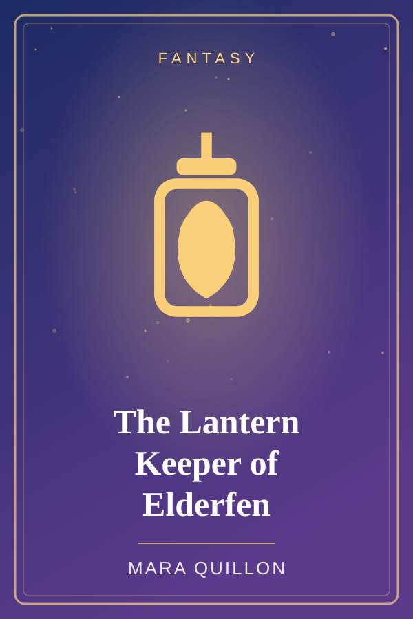
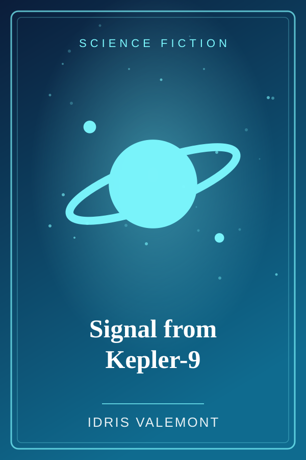
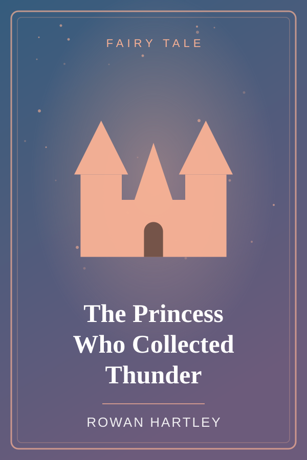
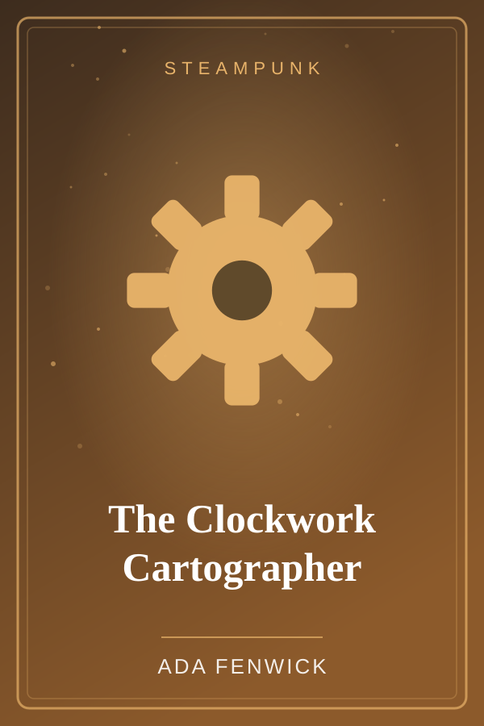
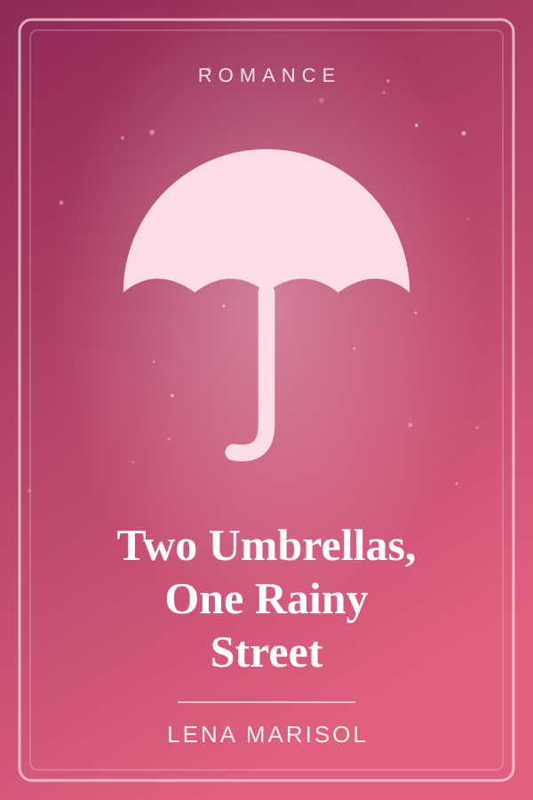
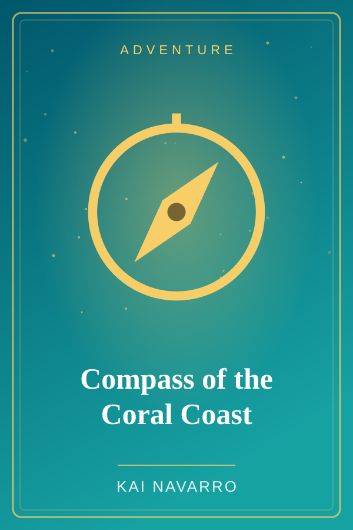
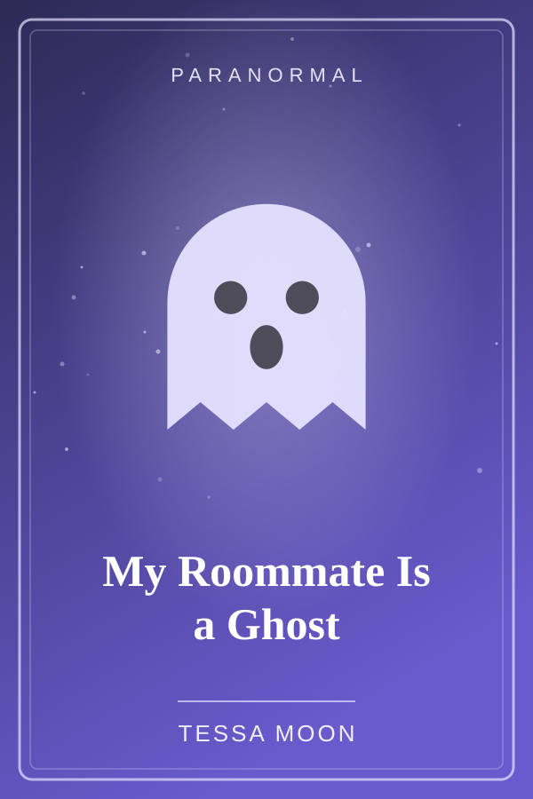
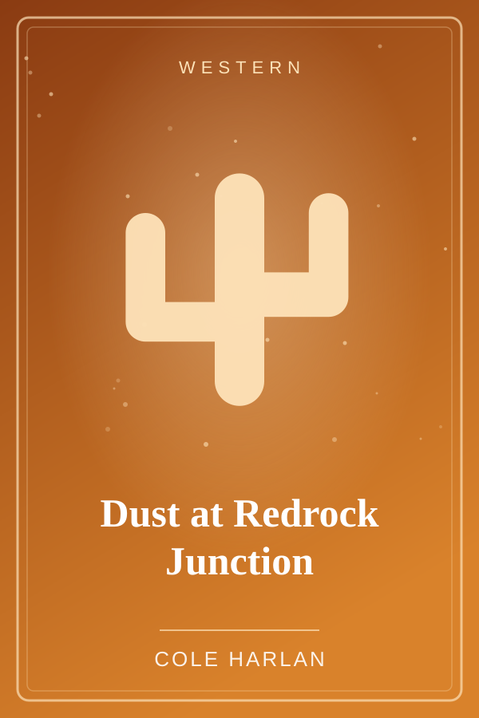

Fantasy
The Lantern Keeper of Elderfen
Twelve-year-old Wren tends the marsh lantern that holds back the Hollow Mist, until the flame speaks and tells her what the mist really wants.
30 stories · 30 genres · one chapter each
From haunted buses to dragons who love thunder, StoryNest is a cozy library of original short stories. Pick a cover, tap Read Story, and finish before your tea gets cold.





Twelve-year-old Wren tends the marsh lantern that holds back the Hollow Mist, until the flame speaks and tells her what the mist really wants.

Every rainy Thursday, Ines and Theo share the same bus stop and pretend not to notice each other, until the day only one umbrella survives the storm.
When page 114 vanishes from the town library's only copy of a centuries-old diary, young librarian Pia must find out who needed it gone.

Siblings Nico and Bea inherit a broken compass that points not north, but toward whatever you miss the most. Their search leads to a drowned lighthouse.

College sophomore Jade finally finds a cheap apartment, only to discover her roommate has been dead since 1974 and has strong opinions about her dishes.

A tired sheriff, a missing water wagon, and one hot afternoon decide whether Redrock Junction survives the summer.
Tap a genre to jump straight to matching stories in the library.
Search by title, author, or genre in the Library.
Every book is one complete chapter, with a progress bar to keep you company.
Tap the heart to save the stories you love. Your likes are remembered.